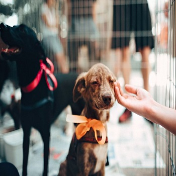

Adoção de animais
Descrição do projeto
Pensa em ter um animalzinho de estimação? Que tal optar pela adoção? Adotar é sempre um gesto de muito amor e carinho, pois além de proporcionar um novo lar para o pet, você ganhará um novo amigo que será sempre grato e fiel companheiro.
De acordo com o levantamento realizado pelo Instituto Pet Brasil, mais de 170 mil animais estão sob os cuidados de 370 ONGs e grupos que atuam na área de proteção animal em todo o Brasil. Já os cachorros de rua chegam a mais de 30 milhões de animais entre cachorros e gatos segundo a Organização Mundial da Saúde (OMS).
Você já reparou na quantidade de animais abandonados nas grandes cidades? São principalmente esses bichinhos que estão vulneráveis a sofrer maus-tratos, abusos, fome e frio. Além disso, outros motivos como velhice e doença, fazem com que o número de abandonos cresçam no Brasil.
Ao optar por acolher e oferecer um lar para esses cachorros e gatos, você dará uma nova chance ao pet de ter uma família que lhe ofereça carinho e amor, além de contribuir para a redução desses números
Mas, além da vontade de adotar, é preciso ter responsabilidade com o animalzinho. Levando em consideração que o bichinho já passou por situações adversas, é preciso um cuidado especial com ele.
Para adotar um amiguinho, em algumas ONGs, é preciso alguns requisitos básicos como ser maior de 18 anos ou estar acompanhado de um responsável, estar em posse dos seus documentos pessoais e comprovante de residência, além de passar por uma pesquisa para avaliar se você tem ou não condições de adotar um pet. Esses procedimentos são realizados para evitar futuros abandonos ou violências.
Em casos de animais de rua, o primeiro passo é procurar um veterinário para realizar exames que possam detectar quaisquer tipos de doenças no pet. Além disso, é importante que o novo tutor tenha em mente que o seu amiguinho precisará de cuidados como alimentação, vacinas e espaço.
Caso não se sinta preparado para este gesto tão nobre que é a adoção, outras ações como doação de ração e remédios podem contribuir não só para a redução dos números de cachorros abandonados, mas para que casas de resgates e ONGs possam ter condições suficientes para acolher, resgatar e tratar da melhor forma esses anjos de quatro patas!
Adotar é um ato consciente e abandonar é crime. Não adote por impulso, adote por amor!
Fonte:https://premiatta.com/posts/a-importancia-de-adotar-um-animal#:~:text=Adotar%20%C3%A9%20sempre%20um%20gesto,sempre%20grato%20e%20fiel%20companheiro.
Voltar